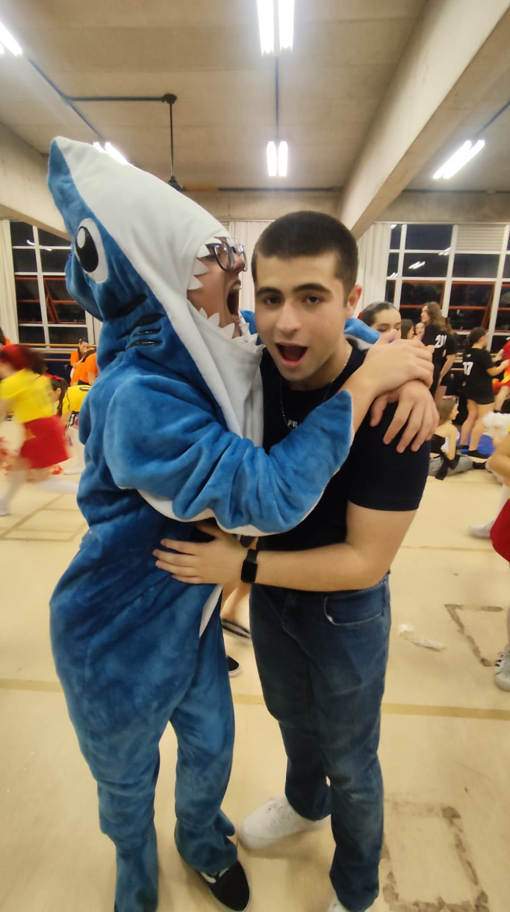

A segunda estante da nossa biblioteca são nossas Mídias
Bem ksksksksks, eu amo ficar olhando nossas fotos e vídeos, imagino que tu não possa ter muito acesso a eless, então a segunda estante da nossa biblioteca terá essas fotos e vídeos sksksksk, mais especificamente dois canvas com todas eles pra ser mais fácil de tu acessar kskskskssk, espero que tu goste.
Pretendo continuar adicionado fotos e vídeos novas conforme a gente vai tirando elas, pra que mesmo sem poder ter eles, tu sempre possa acessar e lembrar o quanto eu te amo
